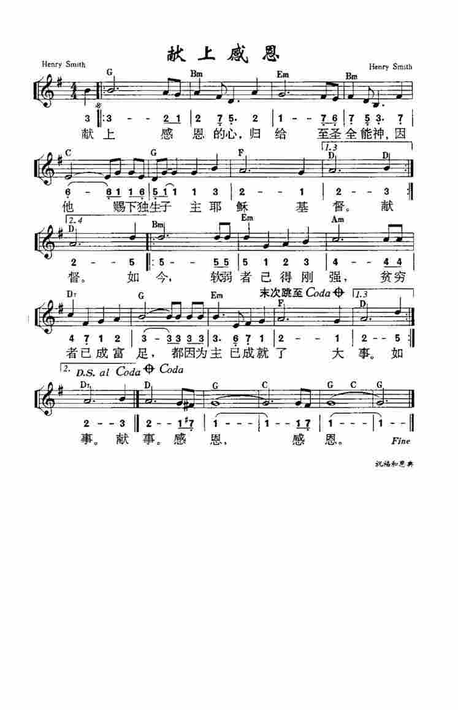

Give thanks with a grateful heart
|
歡欣 Give Thanks 曲：Henry Smith 調：GIVE THANKS 格律：Peculiar Meter / 不規則 詞：Henry Smith 譯：凌東成 詩集：《世紀頌讚》306 |
| [ Give Thanks ] Give thanks with a grateful heart. Give thanks to the Holy One. Give thanks because He's given Jesus Christ, His Son. (x2) And now let the weak say, "I am strong." Let the poor say, "I am rich, Because of what the Lord has done for us." Give thanks. |
歡欣，心裡感謝神；歌唱，歸於聖父； 讚頌，你賜下慈愛獨生的愛子。（x2） 今天，心中剛強無懼怕，主的豐盛滿一生， 皆因主手曾為我顯深恩。讚美！
獻上感恩的心，歸給聖潔真神；
|
|
https://jianpu.chazidian.com/jp_211406/
 |
|
- https://www.youtube.com/watch?v=eUTOqDNoL8E 歡欣（粵語）Give Thanks With a Grateful Heart
- https://www.youtube.com/watch?v=hrRKEk2FEDc 献上感恩的心 獻上感恩的心 Give Thanks
- https://youtu.be/k9uZI4w4xgM Henry Smith - Give Thanks - Lyric Video
http://www.hymncompanions.org/Aug/04/stream.php
獻上感恩的心，歸給聖潔真神；
因祂賜下獨生子主耶穌基督。
如今軟弱者變剛強，
貧窮者成為富足，
都因為主為我成就大事。
感謝
 (請點耳機收聽)
(請點耳機收聽)
這首詩歌的作者施敏士（Henry Smith, 1952 - ）在1981年起，就被視為是一個不能駛車的盲人。

這首詩歌作於1978年，那時他剛畢業自維州長老會的聯合神學院。 他對所學的課程覺得枯燥無味，而宗教派別的爭議更令他失望。 他不善於辭令又有嚴重眼疾，前途茫茫。
於是他回到家鄉，在一個聚會所做平信徒，平日以打零工謀生。 這對一個神學畢業生而言，似乎是了無前途，但這卻是神的安排。
他在家鄉遇到了仙蒂，不久結婚，雖然他的眼疾使他無法找到一份長久的工作，但友誼和愛充實了他的生命。有一天他聽牧師引用哥林多後書8:9「你們知道我們主耶穌基督的恩典，他本來富足，卻為你們成了貧窮，叫你們因他的貧窮，可以成為富足。」於是他寫下了這首詩歌。
當時人們給予這首歌的評價，並不算最高，祇是較一般詩歌略勝一籌而已 。
1986年純全音樂（Integrity Music）第七張唱片以此歌命名，並經多年尋訪才找到了原作者。這首歌的版權費供養了他們多年，使他們走上了事奉的道路。
現今施敏士有自己的錄音室，並參與當地的青年事工及音樂敬拜。 除作曲外，他能演奏電子鍵盤，吉他及低音提琴，他無法閱讀樂譜，一切全憑心記。
仙蒂經營一小生意，幫助維持家計。
數年前，有六個年輕的西國傳教士，奉差派進入中國大陸的內陸尋找地下教會。這是一個艱難的任務，當時基督徒因怕遭受逼害，無人敢對陌生人表露信仰。
有一天，這小組自黃河搭船去一小村莊，住在一幽暗的小客店，飯後休息時，其中一人不經意地輕哼著「如鹿渴慕」。
不料從鄰室傳來輕柔「獻上感恩的心」應和的歌聲，令他們歡欣欲狂。
這交換的樂音，使他們靈�堿蛦q而安全結識，隨後他們被帶領去了許多當地的地下教會。他們回國後提出報導，使西國人士，對中國大陸的教會有嶄新的認識。
這個見證深深地鼓舞了施敏士，他想不到自己的歌能深入地球的另一角。 這首歌在當初只是他喜樂地表達對神無限的慈愛由衷的感激。尤其是「如今軟弱者能變剛強，貧窮者成富足，都因為主為我成就大事，感謝。」
中英文聖詩集參考
英文歌名 Give
Thanks
歡欣讚美 170
世紀讚頌 360
註：「歡欣讚美」詩集為英文版，原名是
Celebration Hymnal．
Besides 1 Thessalonians 5:18,
which is by far the top Thanksgiving verse, other popular selections include:
Ephesians 5:20: “… always giving thanks to God the Father for everything, in the
name of our Lord Jesus Christ.”
Psalm 136:26: “Give thanks to the God of heaven. His love endures forever.”
Psalm 100:4: “Enter his gates with thanksgiving and his courts with praise; give
thanks to him and praise his name.”
Philippians 4:6: “Do not be anxious about anything, but in every situation, by
prayer and petition, with thanksgiving, present your requests to God.”
Colossians 3:17: “And whatever you do, whether in word or deed, do it all in the
name of the Lord Jesus, giving thanks to God the Father through him.”
https://en.wikipedia.org/wiki/Give_Thanks_with_a_Grateful_Heart
Give Thanks with a
Grateful Heart (Wikipedia)
"Give Thanks With a Grateful Heart" or mostly Give Thanks is an American Christian worship song written by Henry Smith in 1978. It is sung in F major with an irregular meter.[1]
History[edit]
"Give Thanks With a Grateful Heart" was written in 1978 by Henry Smith. The song was his only published worship song out of 300 unpublished compositions.[2] It was written after Smith had trouble finding work after graduating from university. He also suffered from a degenerative condition that eventually left him legally blind.[3] While at his church in Williamsburg, Virginia, his pastor inspired him with a reference to how Jesus made himself poor to make others rich through him. When Smith started performing the song in church, a visiting United States Military officer took the song to Europe, from where its popularity spread.[2] In 1986, Integrity Music published the song on their Hosanna! Music audio cassette but credited it as "author unknown". Later that year, Don Moen released the song on his Give Thanks album.[4] Smith contacted Integrity to inform them of his authorship and they said that they had been attempting to track him down. As a result, Smith signed a writer-publisher agreement with Integrity for distribution rights to the song.[2]
The lyrics of "Give Thanks With a Grateful Heart" have been erroneously credited to Moen rather than Smith in some media reports.[5] In the United States, the song was used by a Catholic news website to focus on returning a Christian focus to Thanksgiving celebrations.[6] The song has also been cited by Christian authors to be used for thanksgiving[7] and giving thanks to God.[8]
The song does share some melodic elements with "Go West" by the Village People and later covered by The Pet Shop Boys.
References[edit]
- ^ "Give Thanks (Smith)". Hymnary.org. Retrieved 2016-10-02.
- ^ a b c Terry, Lindsay (2008). I Could Sing of Your Love Forever: Stories Behind 100 of the World's Most Popular Worship Songs. Thomas Nelson Inc. pp. 62–63. ISBN 978-1418574659.
- ^ "Henry Smith". Hymnary.org. Retrieved 2016-10-02.
- ^ "Lyrics for "Give Thanks" by Don Moen". Songfacts.com. Retrieved 2016-10-02.
- ^ "Give thanks with a grateful heart". The North Augusta Star. 2016-06-07. Retrieved 2016-10-11.
- ^ "Happy Thanksgiving Day: Give Thanks with a Grateful Heart". Catholic Online. Retrieved 2016-10-02.
- ^ Meyer, Joyce (2008). "November 21". Ending Your Day Right: Devotions for Every Evening of the Year. Hachette UK. ISBN 978-0446548816.
- ^ White, Linda (1999). Lift Up Your Hearts: Songs for Creative Worship. Westminster John Knox Press. p. 114. ISBN 0664501443.
https://www.countrythangdaily.com/give-thanks-grateful-heart/
“Give Thanks (With a Grateful Heart)”
An American Christian worship song, “Give Thanks (With a Grateful Heart)” dates
back in the late 1970s. It was penned by a young seminary graduate Henry Smith
in 1978. It is a song very close dearly to his heart, inspired by his struggles
in life. In fact, out of all 300 unpublished pieces, this was only his published
composition.
The Song and its Story
Every song has its own story to tell but what matters is the heart behind every
word written in it. “Give Thanks (With a Grateful Heart)” was conceived by Smith
during a difficult time in his life. Instead of being sour and bitter, he turned
his experience into a positive one and became grateful.
After graduating from university, Smith had trouble looking for a job. Also, he
suffered from a degenerative eye condition which would later leave him legally
blind. However, he never lost hope. While at his church in Williamsburg in
Virginia, his pastor shared a verse from the Bible that goes:
“For you know the grace of our Lord Jesus Christ, that though he was rich, yet
four sakes he became poor so that you through his poverty might become rich.”
(1 Corinthians 8-9)
This scripture tugged Smith at the heartstrings. He realized how Jesus made
himself poor just to make others rich through him. Finding hope in the
scripture, Smith crafted the song of thanksgiving and trust. He later called it
“Give Thanks with a Grateful Heart.“
When Smith started performing the song in church, a visiting American Military
officer took the song to Europe. The officer together with his wife reintroduced
the song to a congregation in Germany. Soon, it spread all throughout Europe
becoming a standard hymn in almost every church there.
http://hishymnhistory.blogspot.com/2012/11/give-thanks.html
HYMN HISTORY: “Give Thanks (With a Grateful Heart)”
This became one of worship leader Don Moen’s most famous songs, however, it was not written by him. Following the introduction of the song during a worship service at the Williamsburg New Testament Church in Virginia in 1978, a military couple reintroduced it to a congregation in Germany. The song eventually caught the attention of executives at Integrity Music. When Integrity's Hosanna! Music copyrighted the song in 1986, the author was unknown. After the Give Thanks album was released, the song was brought to the attention of original writer Henry Smith, who contacted Integrity with authorship information. Integrity later included songwriting credits on all subsequent releases, along with a writer-publisher agreement. As of 2010, the song has been recorded by over 50 companies and published in songbooks around the world.